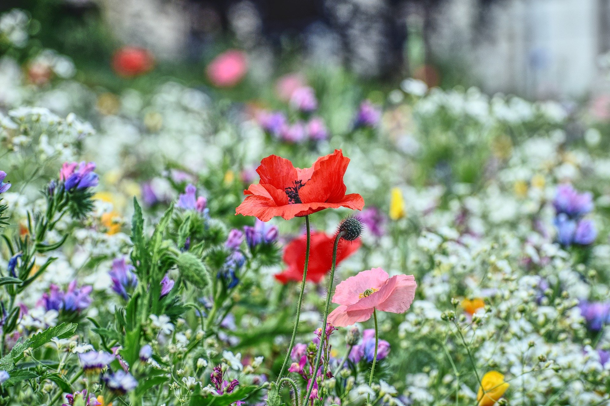
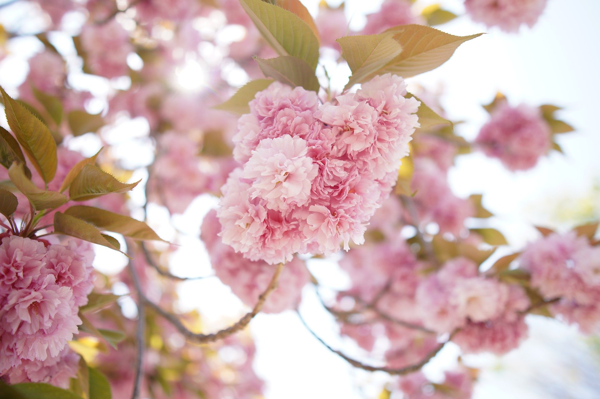
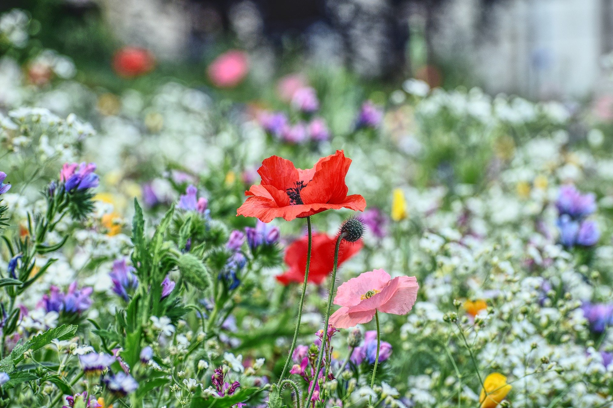
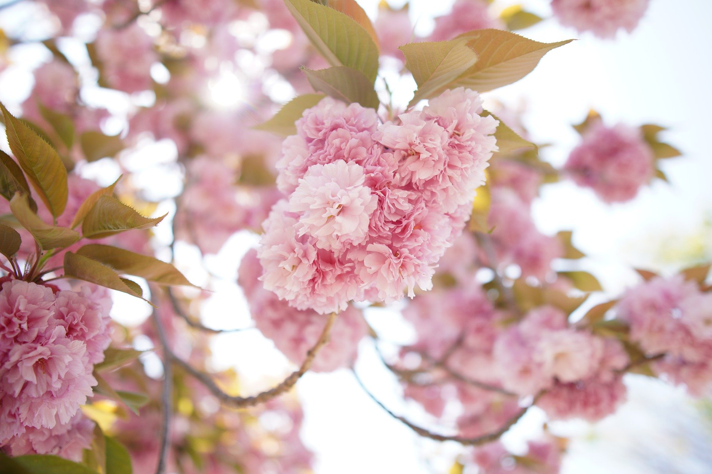

ROSE
꽃의 색깔은 흔히 흰색 · 노란색 · 오렌지색 · 분홍색 · 붉은색으로 다양하고 아름다우며 좋은 향기가 난다.
CHERRYBLOSSOM1
꽃은 4∼5월에 분홍색 또는 흰색으로 피며 2∼5개가 산방상(揀房狀) 또는 총상(總狀)으로 달린다. 꽃자루에 포(苞)가 있으며 작은꽃자루와 꽃받침통 및 암술대에는 털이 없다. 열매는 둥글고 6∼7월에 적색에서 흑색으로 익으며 버찌라고 한다.
LAVENDER1
꽃은 6∼9월에 연한 보라색이나 흰색으로 피고 잎이 달리지 않은 긴 꽃대 끝에 수상꽃차례를 이루며 드문드문 달린다. 꽃·잎·줄기를 덮고 있는 털들 사이에 향기가 나오는 기름샘이 있다. 물이 잘 빠지는 모래땅에 약간의 자갈이 섞인 곳에서 잘 자라고 너무 비옥하지 않은 땅이 좋다. 햇빛을 잘 받는 남향과 습하지 않은 곳에서 잘 자란다.
LAVENDER2
꽃은 6∼9월에 연한 보라색이나 흰색으로 피고 잎이 달리지 않은 긴 꽃대 끝에 수상꽃차례를 이루며 드문드문 달린다. 꽃·잎·줄기를 덮고 있는 털들 사이에 향기가 나오는 기름샘이 있다. 물이 잘 빠지는 모래땅에 약간의 자갈이 섞인 곳에서 잘 자라고 너무 비옥하지 않은 땅이 좋다. 햇빛을 잘 받는 남향과 습하지 않은 곳에서 잘 자란다.
SUNFLOWER
향일화(向日花)·산자연·조일화(朝日花)라고도 한다. 아무데서나 잘 자라지만, 특히 양지바른 곳에서 잘 자란다. 중앙아메리카 원산이며 널리 심고 있다. 높이 2m 내외로 자라고 억센 털이 있다. 잎은 어긋나고 잎자루가 길며 심장형 달걀 모양이고 가장자리에 톱니가 있다.
CHERRYBLOSSOM2
꽃은 4∼5월에 분홍색 또는 흰색으로 피며 2∼5개가 산방상(揀房狀) 또는 총상(總狀)으로 달린다. 꽃자루에 포(苞)가 있으며 작은꽃자루와 꽃받침통 및 암술대에는 털이 없다. 열매는 둥글고 6∼7월에 적색에서 흑색으로 익으며 버찌라고 한다.
WILDFLOWER
같은말로 '야화'라고 하며, 우리말로는 '들꽃'이라 부른다. 2012년 현재 보고되어있는 국내 야생화의 수는 205과 1,158속 4,939종이다. 일반인들이 이해하기 쉽게 꽃이 피는 시기에 따라 계절별로 분류하는데, 이밖에도 서식지에 따라 고산식물, 습지식물로 구분하거나 용도에 따라 관상용, 약용, 밀원 등으로 구분하는 경우도 있다. 우리나라 야생화 중에서 비비추 등은 해외에서도 인기있는 품종으로 알려져 있다.
CHERRYBLOSSOM3
꽃은 4∼5월에 분홍색 또는 흰색으로 피며 2∼5개가 산방상(揀房狀) 또는 총상(總狀)으로 달린다. 꽃자루에 포(苞)가 있으며 작은꽃자루와 꽃받침통 및 암술대에는 털이 없다. 열매는 둥글고 6∼7월에 적색에서 흑색으로 익으며 버찌라고 한다.